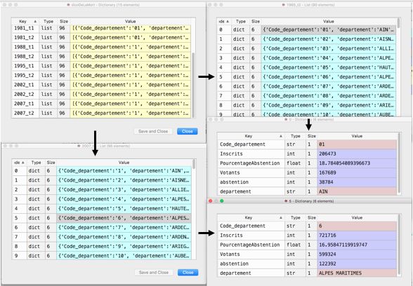
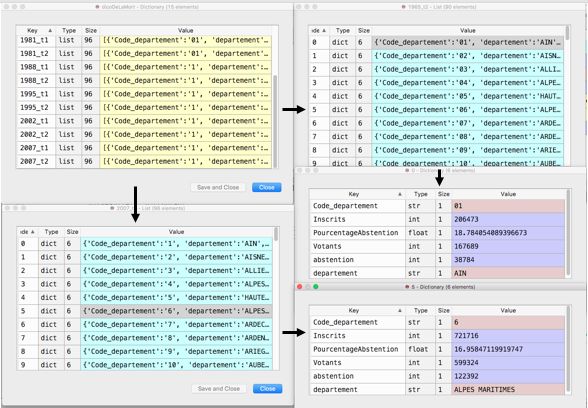
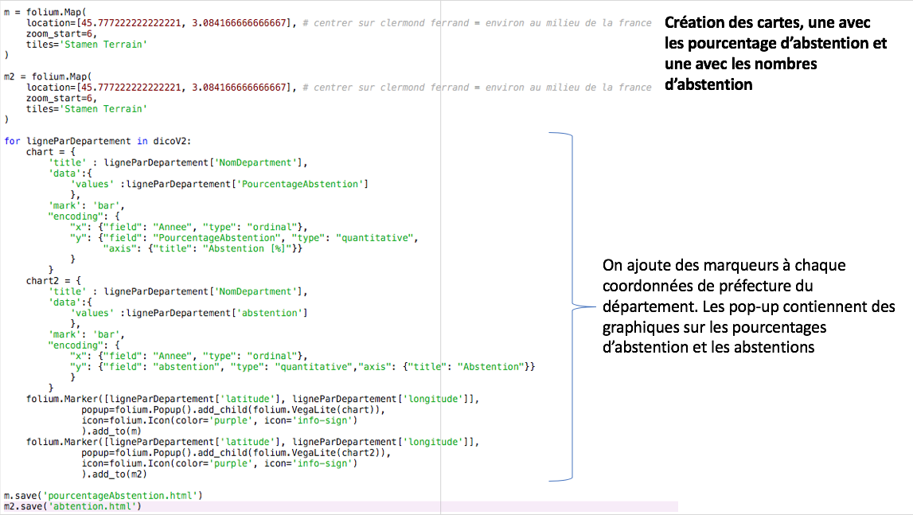
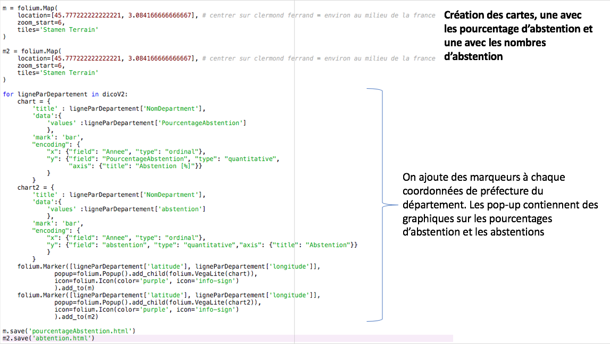

Projet de cartographie interractive d'Elisa MENDELS 1G9
Ce projet vise à montrer les abstentions aux éléctions présidentielles par département grâce à des table CSV.
J'ai utilisé la base de données du gouvernement français: data.gouv:
J'ai souhaité répondre à une question:
J'ai appris grâce à ce projet:
J'ai commencé à chercher un sujet et j'ai trouvé ces tables sur les éléctions présidentielles. Puis je n'ai pas fait très attention et je n'ai as vu qu'elles existaient au format CSV, et donc j'ai convertit les fichiers exel en fichier CSV et ça m'a causé beaucoup de problèmes plus tard. J'ai vu qu'il y avait des espaces dans mes nombres quand j'ai voulu faire des calculs dessus, donc j'ai modifié la fonction d'import. Et puis j'ai vu que je n'avais en vérité que peu de tables avec les DOM-TOM et encore moins avec les français de l'étranger. J'ai donc decidé de les supprimer. Et apres avoir fait mes calculs, j'ai changer d'architecture pour rendre plus simples la création des cartes avec folium. J'ai decidé de faire deux cartes, une pour le nombre réel d'abstentions et un pour le pourcentage que ça représente, dans un soucis de lisibilité et de clarté des chiffres réels. J'ai rencontré beaucoup de problèmes au niveau des formats des tables. Tout d'abord certaines n'avais pas les mêmes clés, et ensuite elles n'avaient pas toutes les même départements dû aux réguliers changements d'administration (la Corse en est le meilleur témoin). De plus il y avait des espaces dans certain nombres. Et encore quelques petits problèmes mineurs. Ainsi, certain problèmes ont du être résolus à la main (pour plus d'efficacité).


 


 
